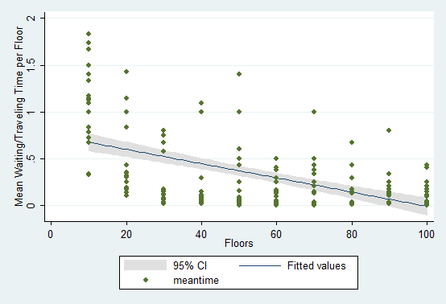
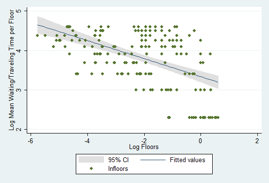

Jerusha Achterberg, Justin Smith, Daniel Villatoro Segura
Homework 1: Up and Down
Consider the following situation:
People enter and leave an elevator as it travels up and down.
· Model, using whatever techniques you wish, the above scenario.
· Suggest some standard social science scenarios that could be usefully modeled using such a process.
People evaluate their satisfaction with each elevator ride based on the cumulative time spent and degree of crowdedness. Cumulative time of ride is defined as the sum of the length of time spent waiting for the elevator, the length of time spent boarding the elevator, the length of time spent in the elevator, and the length of time spent exiting the elevator.
1. Mechanics don’t vary by floor or direction of elevator.
2. There exists a constant capacity limit to the elevator.
3. Elevators go up, stopping at each sequential floor until reaching the highest floor selected (where it remains until called); or down, stopping at each sequential floor until reaching the lowest floor selected (where it remains until called).
4. No disasters or mechanical failure during the simulation period.
5. The only entrance/exit to the building is on the ground floor.
6. People correctly select the single floor of their choice on any given run.
7. Random mixing on the elevator and waiting locations respectively (no jockeying for entrance/exit position).
8. Each person must take ≥2 trips (enter and exit the building)
a. The average person takes four trips (including entering and exiting); thus, the probability of any person entering the elevator and choosing floor 1 is 25%. The remaining 75% are uniformly distributed across remaining floors.
Time steps:
To determine appropriate rates of travel, we
empirically tested elevator and stair speeds in
|
Table 2. Stair time trials (seconds) |
||
|
Trial # |
Up 1 floor |
Down 1 floor |
|
1 |
14 |
|
|
2 |
18 |
|
|
3 |
|
11 |
|
4 |
|
13 |
|
Table 1. Elevator time trials (seconds) |
|||
|
Trial # |
Up 1 floor |
Down 1 floor |
Down 2 floors |
|
1 |
19 |
|
|
|
2 |
22 |
|
|
|
3 |
20 |
|
|
|
4 |
16 |
|
|
|
5 |
|
16 |
|
|
6 |
|
13 |
|
|
7 |
|
19 |
|
|
8 |
|
|
23 |
|
9 |
|
|
23 |
Based on these trials, we estimate that it takes ~4 seconds for the elevator doors to either open or close fully. The time spend traveling between floors is ~8 seconds (averaged by direction of travel). We therefore define our model time step as 4 seconds. It takes 1 time step to either open or close the elevator, and 2 steps between two adjacent floors. For every 4 people entering or exiting the elevator, boarding/deboarding takes and additional time step.
On average, a person enters the building every 1 minute with a probability equal 1/15 steps. A person moves within the building every 1 hour with a probability equal 1/900 steps. We assume that the building is open for 12 continuous hours, or 10,800 time steps.
Populations:
1. Elevators
2. Waiting
3. Landing
Key Results:
|
Number of Floors in Building |
Average Wait Time1 |
|
10 |
1.1 |
|
20 |
0.66 |
|
30 |
0.21 |
|
40 |
0.23 |
|
50 |
0.29 |
|
60 |
0.13 |
|
70 |
0.2 |
|
80 |
0.19 |
|
90 |
0.17 |
|
100 |
0.11 |
1Average wait time is measured in time steps and is defined as the sum of the length of time spent waiting for the elevator, the length of time spent boarding the elevator, the length of time spent in the elevator, and the length of time spent exiting the elevator, all divided by the number of floors traveled.


Extensions:
Satisfaction:
Overall satisfaction is computed for each individual based on their cumulative time spent moving between floors, and the degree of crowdedness on the elevator.
Preferences:
1. Crowding. People have a level of satisfaction that is affected by the size of the crowd in which they are standing.
a. , where a and h differ by person and are drawn from a monotonically decreasing distribution
b. Crowding only affects the level of satisfaction of time spent in the elevator.
2. Waiting time. People have a level of satisfaction that is affected by the length of time spent waiting.
a. , where a and h differ by person and are drawn from a monotonically decreasing distribution such that the function satisfaction(wait.time) is monotonically decreasing
b. Waiting time affects the level of satisfaction of the time spent waiting for, boarding, riding, and deboarding the elevator.
In addition to taking the elevator, people have the option of taking the stairs. Preferences for the stairs depend on the number of floors between the floor of origin and destination, where n is the number of flights that an individual is willing to walk (nU is the number of floors up and nD is the number of floors down).
When including the stairs option, the population can be divided by preferences.
1. Always take the elevator
2. Always take the stairs
3. Walk depending on the size of the waiting crowd
4. Walk depending on the elevator direction
5. Take the stairs when
Other possible extensions:
1. Location (geography, culture) affects individual preferences
2. People waiting on the landing only know the direction of the elevator (not the floor it is currently on).
3. Landing crowd size doesn’t affect satisfaction or preferences.
4. Vary the number of floors
5. Change the location of the elevator
a. Affects the satisfaction functions
6. Waiting people know the floor that the elevator is on
7. Jockeying for position during boarding or standing in the elevator
8. Composition of the elevator affects satisfaction
9. Composition of the waiting group affects satisfaction
b. Age, sex
c. Creepy guy
d. Smokers that smell
Social Science Scenarios:
· People on public transportation: Metro, bus, etc. People leave home, ride around, various stops, return home.
· Vehicle planning: Airplanes leave home airport, enter defined flight patterns, takeoff/land, airport, return home.
· People in closed systems: Grocery shopping, movie theater, museum. People enter complex, entry to aisles/movie/exhibit dependent on density, exit.
· Training programs: College degree, apprenticeship. Where people enter program, try to take classes dependent on density, exit.
· Environmental niche: Daily baboon foraging. Where baboon troops move between distributed niches via resource limited path, return to sleeping site.